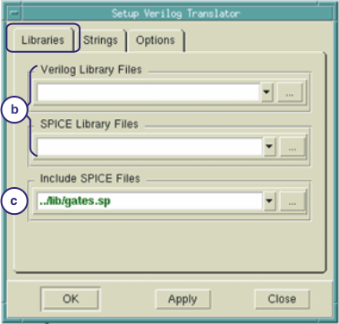
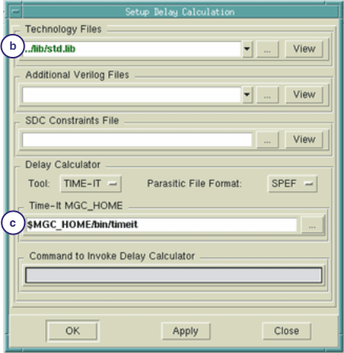
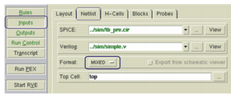
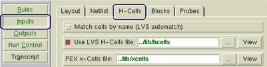
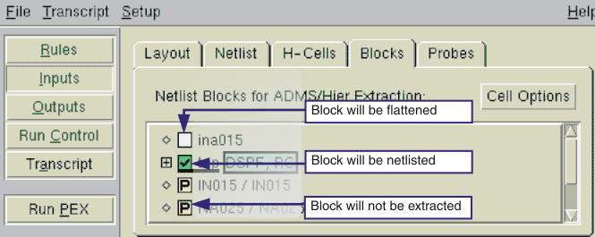
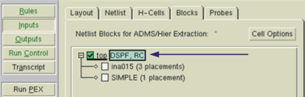
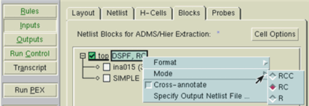
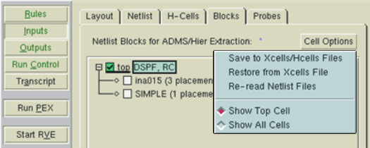
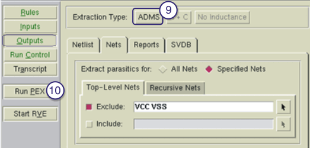

This procedure
assumes you know how to run the Calibre Interactive GUI.
For a more detailed description of how to
use Calibre Interactive, refer to the Calibre Interactive User’s Manual.
Prerequisites
A
Calibre xRC to ADVance MS license in addition to the Calibre xRC
or Calibre xRC CB license. See “Licensing: Parasitic Extraction Products” in the Calibre Administrator’s Guide for
details.
A
valid PEX rule file for this layout.
Hcell
file or Hcell statement
that includes all cells also listed in the xcell file.
Xcell
file listing primitive cells.
Verilog
libraries for the design source.
A delay
calculator, such as Siemens EDA Time-it.
Layout
database that is LVS-clean.
For more information refer
to “Prerequisites for Performing Parasitic Extraction”.
Procedure
- Start the Calibre Interactive
PEX interface:
- Load a runset or rulefile.
- Set up the Verilog Translator.
- Select . The dialog
appears as shown in Figure 1.
- In the Setup Verilog Translator
dialog box, click the Libraries tab.
Enter the location of the library files in the corresponding Verilog
Library Files or SPICE Library Files fields.
- To include SPICE files of
lower level subcircuits referenced in the Verilog library file,
specify the path in the Include SPICE files field.
- Click OK to close the dialog box.
Figure 1. Setup Verilog Translator
- Set up the delay calculator
to produce SDF for the standard cells. The ADMS flow uses Verilog
gate level blocks, which are represented in SDF format, to backannotate
delays.
- Select . The dialog
appears as shown in Figure 2.
- In the Technology Files dialog
box, enter the path to your standard cell library.
- In the
Time-it MGC_HOME field, enter the path to your Time-it™ MGC_HOME directory.
The Time-it tool can be downloaded from Support Center.
Note: You can select delay calculators other than
Time-it by selecting Other from
the drop-down menu, and entering the path of your preferred delay
calculator in the Command to Invoke
Delay Calculator field. See “Setting Delay Calculation” in the Calibre Interactive User’s Manual for required parameters.
Figure 2. Setup Delay Calculation
- Click OK to close the dialog box.
- In the PEX Options pane, define the
ground node name (usually VSS) in the Netlist tab.
- In the Inputs pane, fill out the Netlist tab.
- Click the Format button and
select MIXED. This specifies the format of the top level netlist,
and exposes both the SPICE and Verilog fields.
- Enter the names of all the
source netlist files for LVS and extraction. If a file includes
other files, the other files do not need to be separately listed.
- Browse to the name of the
top cell in the Top Cell field. (Browsing is recommended, since
the cell name is case-sensitive.)
Figure 3. Netlist Tab for ADMS
- Fill out the H-Cells tab. The ADMS flow
requires an xcell file which identifies primitives.
Figure 4. H-Cells Tab for ADMS
- Fill out the Blocks tab. Here you specify
the blocks to be netlisted and the output format to use. The blocks
are identified from the source files in the Netlist tab. The xcell
file determines whether blocks are primitives.
- Click block names to mark
them for netlisting or flattening into the parent cell. Blocks marked
with a “+” contain other blocks; click the + to show them.
You cannot unselect the top
cell; it is always netlisted. Also, you cannot change primitives,
marked with a P, from the interface.
Figure 5. Explanation of Block
Icons
- For blocks marked with a green
checkmark, right-click on block names and select Format to access the netlist
formats. (The block must be marked for netlisting first.) Formatted
blocks show the format and extraction mode after them, as shown
in Figure 6.
Figure 6. Formatted Block
Only formats accepted by the
ADVance MS simulator are available. This includes DSPF, Eldo, HSPICE,
SPEF, and SDF. SDF is the format for backannotating delays for Verilog
gate-level description.
- To change from the default
RC extraction mode to RCC or R, right-click the green box with the
formats. This menu also lets you specify the netlist name and mark
a block for cross-annotation.
Figure 7. Changing Block Extraction
Mode
- Save your changes by selecting . Blocks which you have marked for
netlisting are added to the hcell and xcell files.
Figure 8. Saving Blocks to Cell
Files
- In the Outputs pane, set Extraction
Type to ADMS. The other
settings are read from the Blocks tab. (Do not change Format here
- it will not be reflected in the Blocks tab.) You may also want
to exclude power and ground nets from extraction. This is set under
the Nets tab.
Figure 9. Outputs Tab for ADMS
- Click the Run PEX button to extract parasitics
and calculate delay. When the transcript shows “Writing SDF”, the
run is complete.
Figure 10. Transcript for Successful
ADMS Run
Results
Running PEX produces several required
files, and at least two other files in the run directory. The required
files are subsequently included in the ADMS testbench for post-layout
simulation of the design.
The required files are:
digital_blocks.sdf
— The SDF files of the digital blocks.
top_cell.format —
The post-layout netlist of the top level, where format is
the format specified in the Blocks tab.
bind.inc —
A file containing the .BIND
statements for ADMS. The .BIND statements will replace the digital
block instance within the post-layout netlist with its verilog model.
top.inc —
A file specifying the location and name of the top-level parasitic
netlist.
The other files are: